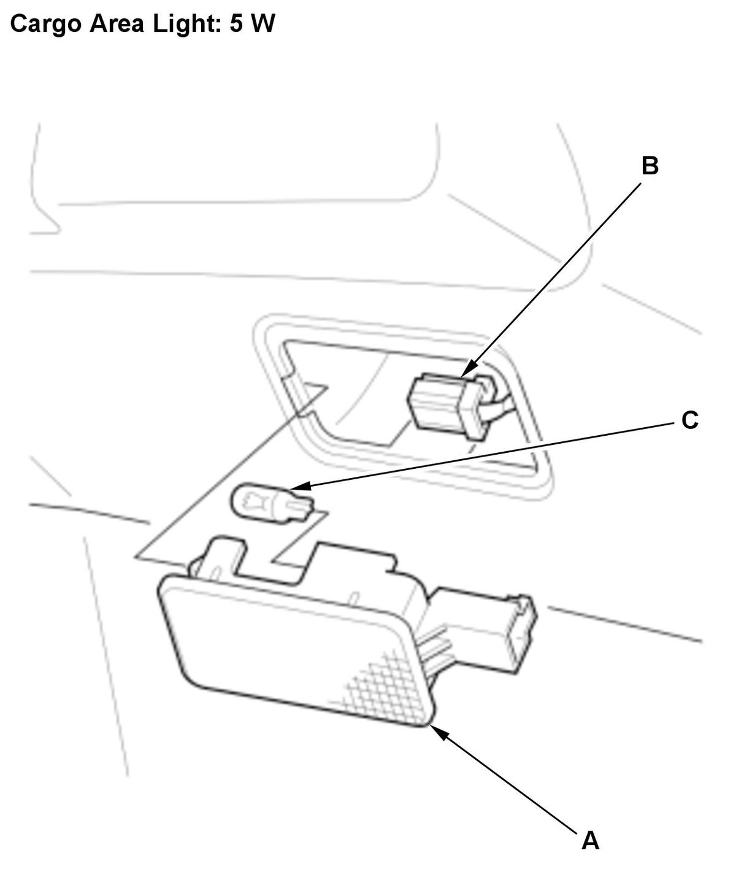

LEMON Manuals
: Even more car manuals for everyone: 1960-2025
Home
>>
Honda
>>
2016
>>
Civic LX, 4D Sedan, Automatic CVT Trans
>>
Repair and Diagnosis
>>
Accessories & Equipment
>>
Interior/Illumination Lights
>>
Interior Lighting - Service Information
>>
Removal, Installation & Test
>>
Cargo Area Light Removal, Installation, and Test (2017 2018 2019 2020 2021)
>>
Removal and Installation
Removal and Installation
Cargo Area Light - Remove

Courtesy of HONDA, U.S.A., INC.
1. Carefully pry off the sides of the cargo area light (A) to release the hook and pull out the light.
2. Disconnect the connector (B).
3. Remove the bulb (C) from the cargo area light.
All Parts Removed - Install
1. Install the parts in the reverse order of removal.